10. Taasisi fulani iligawa vitabu 445 vya Hisabati kwa shule 3. Ikiwa shule moja ilipata 25 ya vitabu vyote, je shule hiyo ilipata jumla ya vitabu vingapi?11. Katika shule moja ya bweni, kila mwanafunzi hula nyama kiasi cha 18 ya kilogramu. Je, wanafunzi wangapi watakula nyama yenye uzani wa kilogramu 64? 12. Kuna 11000ngapi katika 110?13. Kaya za kijiji fulani ziligawana tani 2 za mahindi. Ikiwa kila kaya ilipewa 120 ya tani moja, je, kijiji hicho kina kaya ngapi?14. Vipande vingapi vya ubao wenye urefu wa meta 54 vitakatwa kwenye ubao wa meta 75?15. Wazazi waliwagawia watoto wao 12ya shamba. Ikiwa kila mtoto alipata 112ya shamba hilo, je, wazazi hao walikuwa na watoto wangapi?